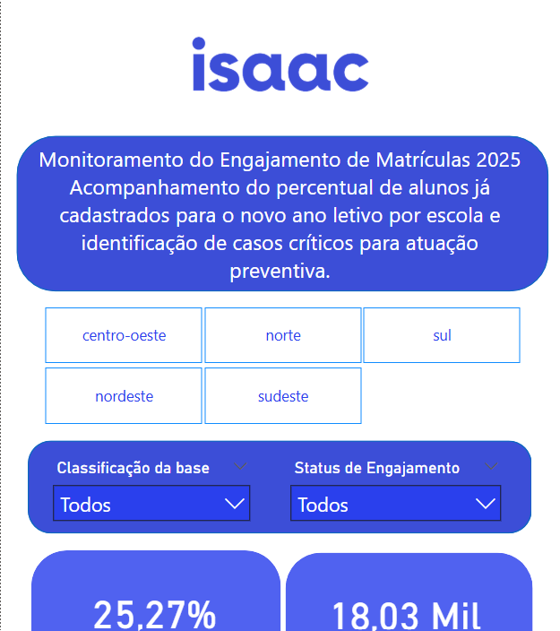
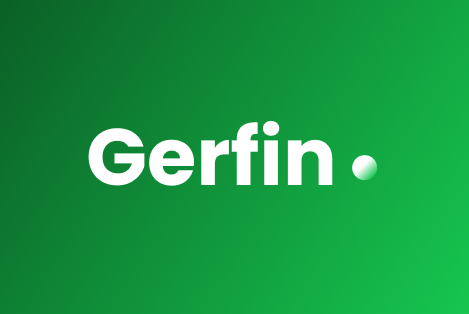

Stack Tecnológico & IA
Portfólio de Projetos

DASHBOARD COMERCIAL
Acompanhamento de receita ao longo do tempo e análise de desempenho por lojas, focado em entender o comportamento do aplicativo e alavancar vendas.
Ver detalhes
DASHBOARD DE LOGÍSTICA
Monitoramento contínuo dos indicadores OTIF (On Time in Full) e análise de performance regional das lojas para otimização da cadeia de suprimentos.
Ver detalhes
DASHBOARD FINANCEIRO
Controle de faturamento, vendas e saúde financeira por unidade de negócio, oferecendo suporte direto para ajustes estratégicos da diretoria.
Ver detalhes
ENGAGEMENT ANALYTICS
Monitoramento do Engajamento de Matrículas 2025. Aplicação de análise preventiva de dados para identificação de gargalos e oportunidades em escolas.
Ver detalhesETL & DATA QUALITY SCRIPT
Desenvolvimento de script Python para análise exploratória, detecção de anomalias e higienização de dados em bases de CRM, garantindo a confiabilidade da informação.
Ver código no GitHub
EDA & PIPELINE DE AUTOMAÇÃO
Refatoração de bases legadas e unificação de dados sem padronização. Uso avançado de Python para automatizar a extração e organizar pipelines de dados.
Ver código no GitHub